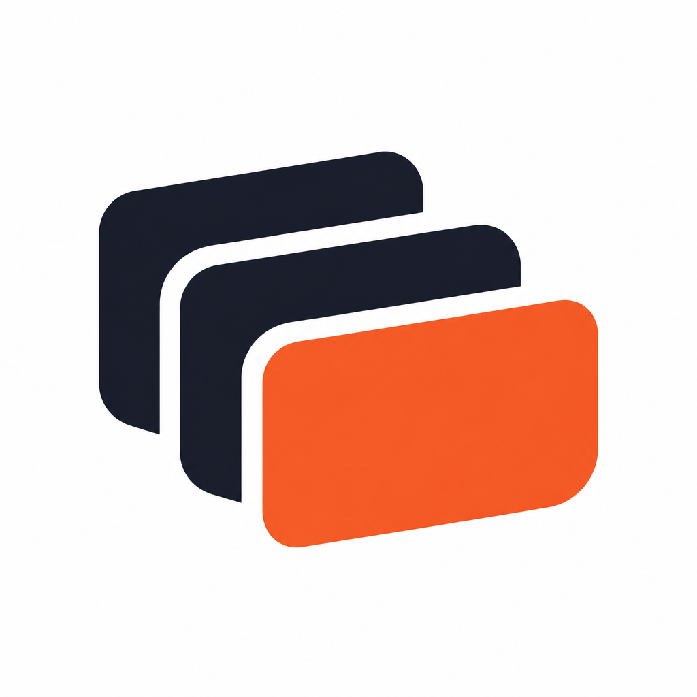
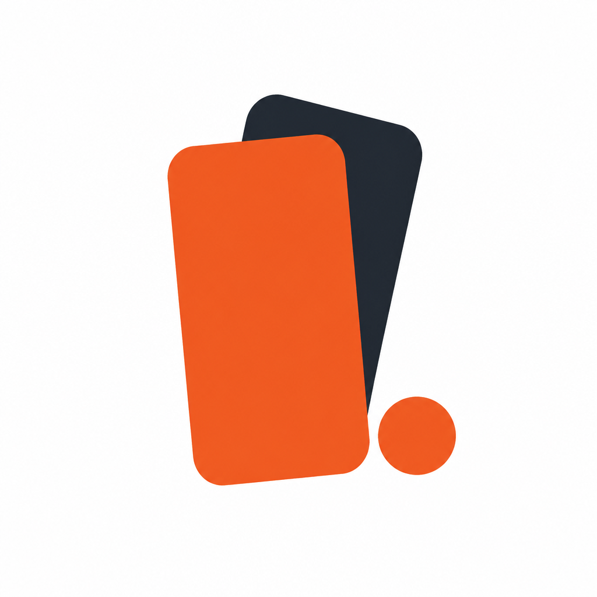
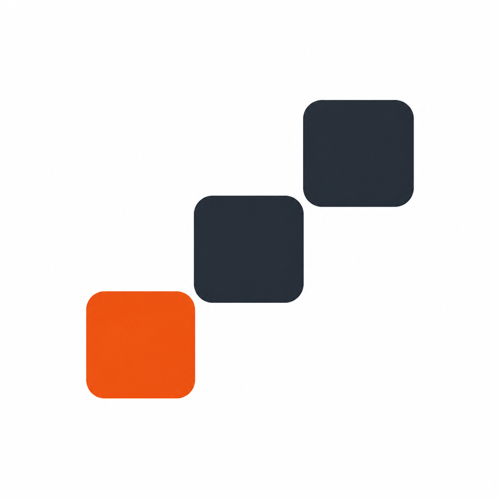
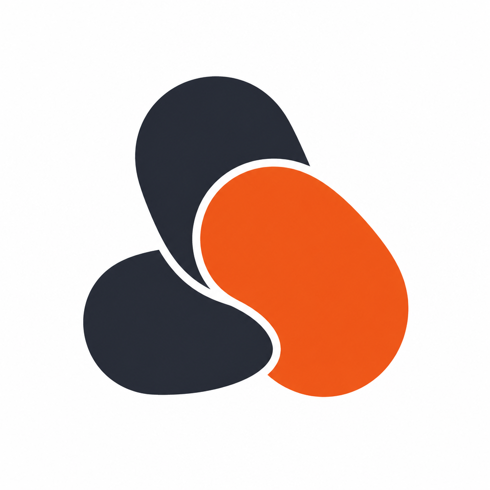

PWA-Mock: weisser Hintergrund, Mark freigestellt (kein Rahmen / kein App-Icon-Chrome). Bitte einen Buchstaben wählen (A–F) — danach setzen wir App-Mark + PWA-Icons um.
buddy-logo-2026-a-stack.png

buddy-logo-2026-b-layers.png
buddy-logo-2026-c-mono-b.png

buddy-logo-2026-d-duo.png

buddy-logo-2026-e-steps.png

buddy-logo-2026-f-capsules.png